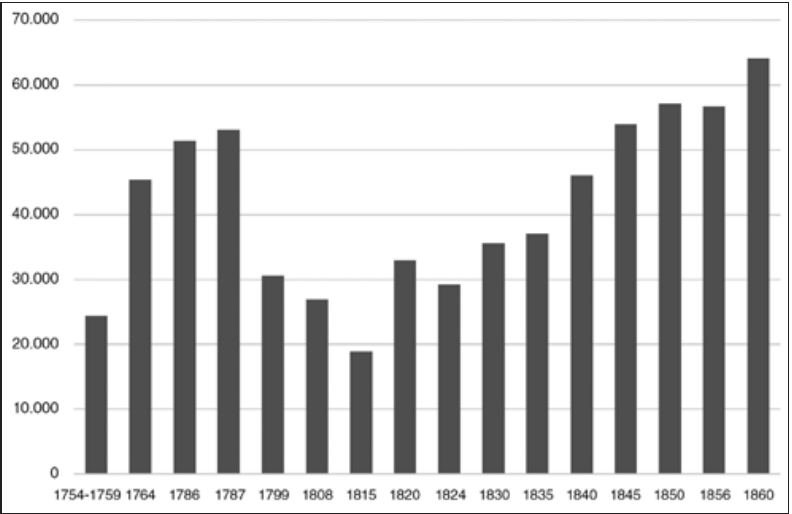
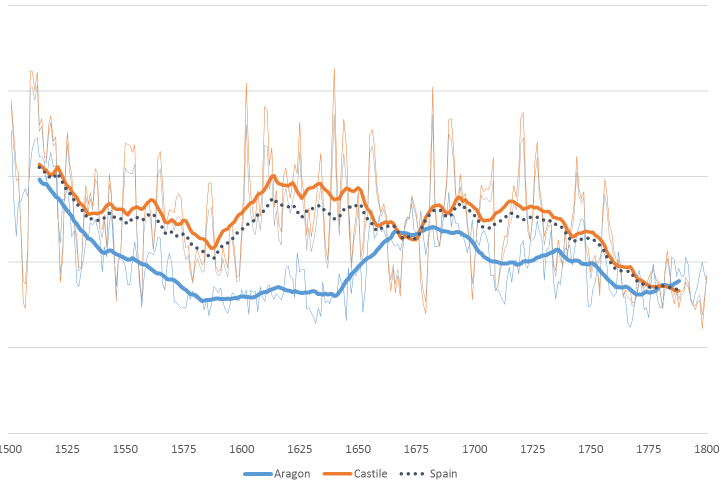
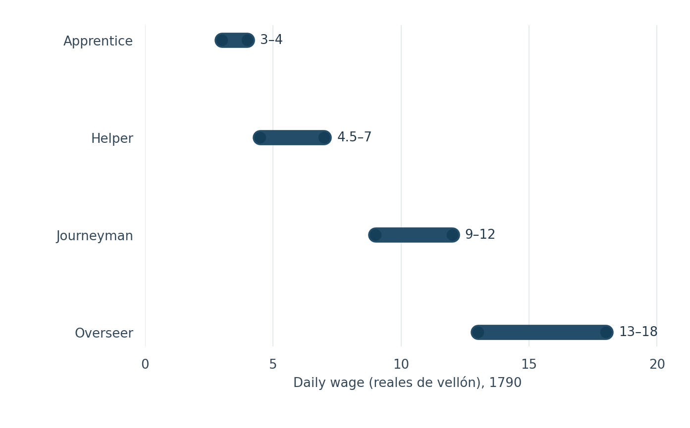

Selected publications

Beyond subsistence: measuring the cost of respectable living in eighteenth-century Seville
Ernesto López Losa · Revista de Historia Económica / Journal of Iberian and Latin American Economic History
Reconstructs the cost of a respectable standard of living in eighteenth-century Seville.
Article ↗
Unreal Wages? Daily Wages, Annual Salaries and Labour Incomes in Early Modern Spain: Seville, 1530–1833
María Isabel Bartolomé Rodríguez, Mario García-Zúñiga, Manuel González-Mariscal & Ernesto López Losa · A Historical Casebook of Wage Formation, Palgrave Macmillan, pp. 243–281
Compares daily wages and annual salaries to reconstruct labour incomes in Seville, 1530–1833.
Chapter ↗
Resource management and institutions in Northern Spain’s fisheries. Basque fishermen guilds (18th to early 20th centuries)
Ernesto López Losa · Scandinavian Economic History Review
Examines resource management and the institutions of northern Spanish fishing guilds.
Article ↗
Institutional constraints to the development of the Spanish fishing sector (18th and 19th centuries)
Ernesto López Losa · Revista de Historia Industrial — Industrial History Review, 32(87), 81–109
Studies institutional constraints on the development of Spanish fisheries in the eighteenth and nineteenth centuries.
Article ↗
Spanish subsistence wages and the Little Divergence in Europe, 1500–1800
Ernesto López Losa & Santiago Piquero Zarauz · European Review of Economic History, 25(1), 59–84
Places Spanish subsistence wages in the European debate on the Little Divergence.
Article ↗
Skills and human capital in eighteenth-century Spain: wages and working lives in the construction of the Royal Palace of Madrid (1737–1805)
Mario García-Zúñiga & Ernesto López Losa · Economic History Review, 74(3), 691–720
Analyses wages and working lives during the construction of Madrid’s Royal Palace.
Article ↗